Audit Trail
SCR-AUDIT-001·002·003·004·005 · 統合照会 · カテゴリ別表示 · 変更履歴の詳細 · エクスポート
監査証跡の照会
- 1.1画面構成
- 1.2カテゴリとフィルター
- 1.3変更履歴の詳細
1.1画面構成
概要
臨床データがいつ・誰が・何を・何から何へ・なぜ変更されたかを、一画面にまとめて確認する画面です。照会専用のため、この画面には修正や削除のボタンがありません。履歴は追加されるのみで、削除されることはありません 2.1。上から規制準拠の案内 → カテゴリ → フィルター → 一覧の順に読み、1件を詳しく見るときは「表示」で詳細ウィンドウを開きます。
画面説明
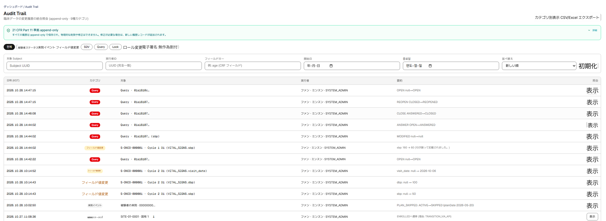
「カテゴリ別表示」 — カテゴリを1つだけ専用カラムで表示する画面へ移動します 3.1。押すと先に「被験者ステータス」タブが開き、そこからタブを切り替えます。
「CSV/Excel エクスポート」 — 現在設定しているフィルターの範囲をファイルに抽出します 4.1。データ管理者・監査者にだけ表示されるボタンです。
画面のサブタイトルが扱う範囲を示します — 「臨床データ変更履歴の統合照会（append-only · 9種カテゴリ）」。
21 CFR Part 11 規制準拠の案内 — 履歴の保存方針と根拠規定 2.1 · 2.2。
カテゴリのクイック選択 — 9種 + 「全体」 1.2。
補助フィルター — 対象 Subject · 実行者ID · フィールドキー · 開始日 · 終了日 · 並べ替え 1.2。
一覧は6列です — 日時（KST）· カテゴリ · 対象 · 実行者 · 要約 · 照会。時刻はすべて韓国時間に換算して表示されます。
「表示」 — その1件の詳細ウィンドウを開きます 1.3。行のどこを押しても同じウィンドウが開きます。
カテゴリバッジ — 9種がそれぞれ異なる色で区別されます。
アクセス経路
- • 左側メニュー「品質・規制 > Audit Trail」 — プロジェクトに入った後にだけ表示されます。
- • プロジェクトダッシュボード > 「監査証跡」ウィジェット — 一覧の行を押すか、右下の「Audit Trail →」を押します。
- • 同じダッシュボードの「監査サマリー」 · 「カテゴリ分布」ウィジェットは件数だけを示し、押しても移動しません — 移動できるのは上の2か所だけです。
注意事項
誤解しやすい動作
- • この画面に入れるのは、研究責任者・データ管理者・監査者だけです。システム管理者は全体権限ですべての画面を開けるため、この画面にも入れます。ワークスペース管理者・研究看護師・臨床開発モニター（CRA）には左側メニューに表示されず、アドレスを直接入力しても、権限が必要だという案内だけが表示されます。ユーザー追加・設定変更などの管理・運用の履歴は、この画面ではなく「運用履歴」画面にあります。また、研究責任者は自分の参加機関の履歴だけを見られます — 画面ではなくシステムが自動で絞り込みます。
1.2カテゴリとフィルター
概要
一覧を絞り込む方法は2層です。上のカテゴリチップで、どの種類の履歴を見るかを選び、下の補助フィルターで対象・実行者・期間を絞り込みます。2層は同時に適用され、値を変えると少し後に一覧が自動的に再照会されます — 別途「検索」ボタンは押しません。
画面説明


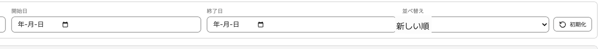
「全体」 — 9種すべてを表示します。最初に入ったときはこの状態です。
カテゴリチップ — 押すたびにオン・オフが切り替わります。複数を一緒に選ぶことができ、1つも選ばれていなければ、再び「全体」と同じになります。
対象 Subject — 被験者をUUIDで指定します（「Subject UUID」）。カンマ区切りで複数名を入力できます。
実行者ID — 変更を行ったユーザーをUUIDで指定します（「UUID（完全一致）」）。
フィールドキー — CRFフィールド名で絞り込みます（「例: age（CRFフィールド）」）。「フィールド値変更」の履歴にだけ当てはまります。
開始日 — この日付から表示します。空欄にすると最初からになります。
終了日 — この日付までを表示します。空欄にすると現在までになります。
並べ替え — 新しい順（既定）または古い順です。
「初期化」 — カテゴリとフィルターをすべて最初の状態に戻します。
注意事項
誤解しやすい動作
- • 被験者と実行者はUUIDでしか検索できません。入力欄が求める値は、一覧の「対象」列に表示されるスクリーニング番号（S-ONCO-000001）や人の名前ではありません。その値を入れると、結果が空に見えます。被験者UUIDは、変更履歴の詳細ウィンドウの「被験者ID」 1.3 か、被験者画面のアドレスで確認します。特定の被験者の履歴だけを見たい場合は、期間とカテゴリで絞り込んでから「対象」列を目で探すほうが早いです。
1.3変更履歴の詳細
概要
履歴1件をまるごと表示するウィンドウです。履歴情報 · 対象 · 理由 · 変更前/後の4つのまとまりが順番に並び、一番下にその履歴の参照番号が付きます。表示される値によってまとまりが増えることもあります — 電子署名の履歴なら署名情報が、システムが接続情報を残した場合はIP · 接続プログラムが一緒に表示されます。このウィンドウにも修正機能はありません。
画面説明
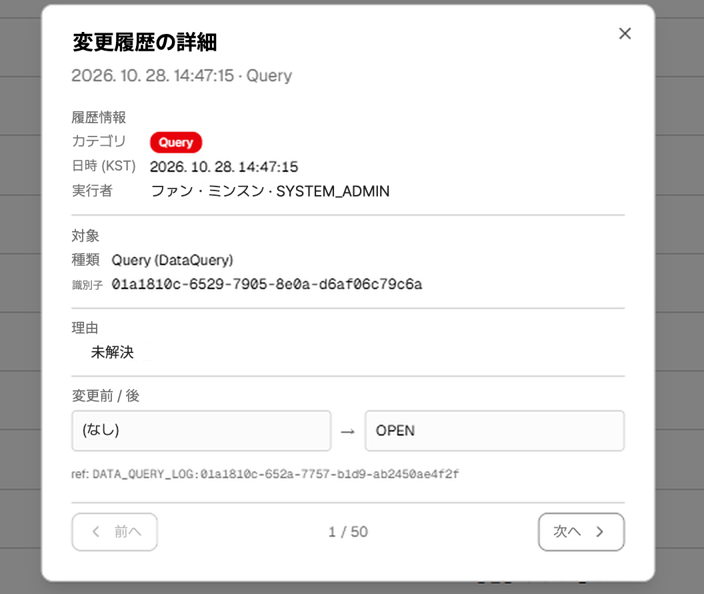
「前へ」/「次へ」 — 一覧の順番どおりに隣の履歴へ移動します。中央の「1 / 50」が、現在の位置と移動できる範囲です。
閉じる（×） — ウィンドウを閉じて一覧に戻ります。
履歴情報 — カテゴリ · 日時（KST）· 実行者（氏名 · ロール）。実行者は氏名 · ロールコードの形で表示されます。
対象 > 種類 — 韓国語名と原文を併記します（「Query (DataQuery)」）。システムに新しく追加された種類は、原文だけが表示されます。
理由 — 変更時に入力した理由がある場合にだけ表示されます。
変更前 / 変更後 — 左が以前の値、右が変更後の値です。値がなかった箇所は「(なし)」と表示されます。
参照番号（ref） — この履歴1件を指す値です。お問い合わせや他の資料との照合の際は、この値をそのままお伝えください。ダウンロードしたファイルの1列目と同じ値です 4.3。
注意事項
誤解しやすい動作
- • 「前へ / 次へ」は、現在の一覧に読み込まれた範囲の中でのみ移動します。一覧は一度に50件ずつ読み込むため、キャプチャのように「1 / 50」と表示され、51件目の履歴にはこのウィンドウから移動できません。それより後の履歴を見るには、ウィンドウを閉じ、一覧の下の「次へ」でページを送ってから、もう一度開いてください。
規制準拠の案内
- 2.1append-only の案内
- 2.2規制原文の確認
2.1append-only の案内
概要
一覧の上の緑色の帯は、この画面の履歴をどのように保存するかを示す案内です。要点はappend-onlyです。一度蓄積された履歴は修正も削除もできず、直すべきことがある場合は新しい履歴を追加して記録します。そのため、この画面のどこにも修正・削除のボタンはありません。監査者としてログインすると、この案内が最初から開いた状態で表示されます。
画面説明
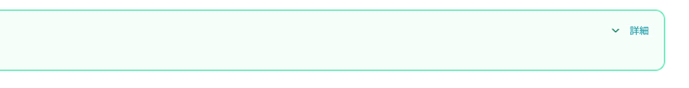
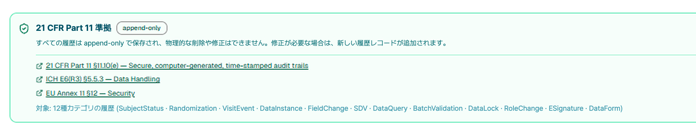
「詳細」 — 案内を開きます。開いた後は「たたむ」に変わります。
開くと根拠規定3件と履歴の対象一覧が表示されます。規定は押すと原文を見ることができます 2.2。
append-only バッジ — 保存方式を1語で示します。
本文 —「すべての履歴は append-only で保存され、物理削除・修正はできません。修正が必要な場合は、新規の履歴レコードが追加されます。」
履歴の対象一覧 —「対象: 12種カテゴリの履歴（SubjectStatus · Randomization · VisitEvent · DataInstance · FieldChange · SDV · DataQuery · BatchValidation · DataLock · RoleChange · ESignature · DataForm）」
注意事項
必須確認 データ破損 · フォーム完了不可
- • 案内の「12種」と画面のサブタイトルの「9種」は異なります — 実際に照会・抽出されるのは9種です。案内文の12種は制度上の保存対象全体で、この画面のカテゴリチップ・タブ・エクスポートの範囲はすべて9種です。違いのある3種（DataInstance · BatchValidation · DataForm）はまだこの画面に表示されないため、ここでは探さないでください。特にCRFフォーム自体の変更のような管理・運用の行為は「運用履歴」画面で確認します。
2.2規制原文の確認
概要
案内に記載された規定名は、すべてリンクです。押すと新しいタブで該当規定の公開原文サイトが開き、作業中だったSMART-EDCのタブはそのまま残ります。監査対応の資料を準備するときに、根拠条文をその場で確認するためのものです。
画面説明


21 CFR Part 11 §11.10(e) —「Secure, computer-generated, time-stamped audit trails」。米国FDAの電子記録・電子署名に関する規定で、この画面の根拠です。
ICH E6(R3) §5.5.3 —「Data Handling」。臨床試験の管理基準における資料の取扱い条項です。
押すと、新しいタブに原文サイトが開きます。
EU Annex 11 §12 —「Security」。欧州のコンピュータ化システムの附属書です。
アドレスが外部サイトに変わったことを確認できます — SMART-EDCではありません。
開いた文書のタイトルです。規定の全文なので、必要な節は文書の中から探して読みます。
注意事項
誤解しやすい動作
- • 案内に書かれた節番号と、開いた文書の章番号が異なる場合があります。キャプチャがその例で、案内は「ICH E6(R3) §5.5.3」ですが、開いた文書の該当章は「3. SPONSOR」です — 改訂で章番号が変わったもので、内容は同じ資料の取扱い条項です。また、これらのサイトはSMART-EDCが管理しない外部サイトのため、アドレスや構成が変わることがあります。提出・保管用の根拠が必要な場合は、リンクではなく、機関が保有する規定の写しを使用してください。
カテゴリ別表示
- 3.1タブ切り替えと専用カラム
3.1タブ切り替えと専用カラム
概要
カテゴリを1つだけ選び、そのカテゴリにだけある項目を列として立てて表示する画面です。たとえば被験者ステータスの履歴には前のステータス · 後のステータスの列が、電子署名の履歴にはトリガー · 無効化の列が付きます。統合照会とフィルター・規制準拠の案内・詳細ウィンドウはそのまま共有し、変わるのは 表の列構成だけです。
画面説明
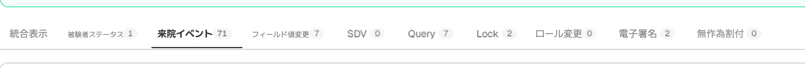
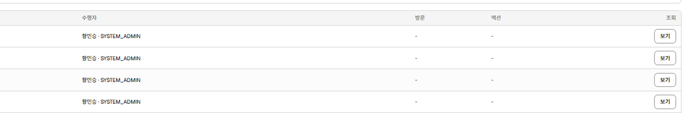
「統合表示」 — 9種をまとめて表示する画面 1.1に戻ります。
カテゴリタブ — 押すと、そのカテゴリだけを照会します。今表示しているタブは下線と太字で示されます。
「表示」 — 統合照会と同じ詳細ウィンドウを開きます 1.3。
タブ横の数字はそのカテゴリの履歴の全件数です — どこを見るかを決める基準にしてください。0件のタブもそのまま表示されます。
「実行者」の次がすぐ専用カラムです — 統合照会にあった「要約」列はありません。1行で読めた内容は、ここには表示されません。
その位置にカテゴリ専用カラムが入ります — 来院イベントは「来院」 · 「アクション」の2種です（下表参照）。
値がない場合は「-」と表示されます。キャプチャの来院イベントタブでは、2つの列がすべて「-」です。
カテゴリ9種と専用カラム
| カテゴリ | 記録される変更 | 専用カラム |
|---|---|---|
| 被験者ステータス | 被験者ステータスの遷移 | 前のステータス · 後のステータス · Terminal |
| 来院イベント | 来院の作成 · 実施 · 欠測 | 来院 · アクション |
| フィールド値変更 | CRF入力値の修正 | 来院 · フィールド · 変更タイプ |
| SDV | 原資料照合の実施 | アクション |
| Query | Queryの開始 · 回答 · 終了 | アクション · 重要度 |
| Lock | ロック · 解除 | Lock種類 · アクション |
| ロール変更 | プロジェクトのロール割付変更 | 前のロール · 後のロール |
| 電子署名 | 署名 · 署名の無効化 | トリガー · 無効化 |
| 無作為割付 | 割付 · 割付解除 | 割付タイプ · 割付番号 |
注意事項
必須確認 データ破損 · フォーム完了不可
- • この画面だけでは何が起きたのか分からない場合があります。「要約」列がないうえに専用カラムまで「-」になると、キャプチャの来院イベントタブのように、行には日時・対象・実行者だけが残ります。その場合は行の「表示」で詳細を開くか、「統合表示」に戻って要約列を読んでください — 専用カラムが空になるのは、そのカテゴリがその項目を記録しないためで、履歴そのものが空であるわけではありません。
監査証跡のエクスポート
- 4.1範囲の確認と実行
- 4.2抽出ファイルのダウンロード
- 4.3ダウンロードしたファイル
4.1範囲の確認と実行
概要
一覧の右上にある「CSV/Excel エクスポート」を押すと開くウィンドウです。ファイルをその場で作るのではなく、リクエストだけを受け付けたうえで、システムがその後でファイルを作ります — 完了したら抽出画面からダウンロードします 4.2。ウィンドウに入るのは今かかっているフィルターそのものなので、範囲を変えるには、ウィンドウを閉じて一覧のフィルターを直してください。
画面説明
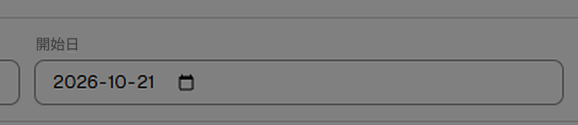
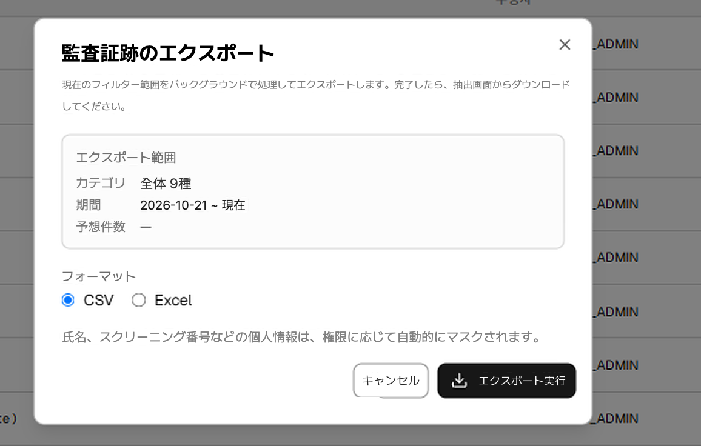
期間を先に指定します — 一覧フィルターの開始日・終了日のうち1つ以上。指定しないと実行ボタンは押せません（下の注意事項を参照）。
フォーマット — CSV（既定）またはExcelのいずれかを選びます。
「エクスポート実行」 — リクエストを受け付け、ウィンドウが閉じます。
「Audit Trail の抽出を開始しました。完了したら抽出画面からダウンロードしてください。」という案内が表示され、「抽出画面を見る」で直接移動できます 4.2。
カテゴリ — チップで選んだものがそのまま入ります。何も選んでいなければ「全体 9種」です。
期間 — 終了日を空欄にした場合は「~ 現在」と表示されます。
予想件数 — キャプチャのように「—」のまま残ることがあります。一覧が総件数を数えずに読み込まれるためで、故障ではありません — そのまま実行しても構いません。
個人情報の案内 —「氏名・スクリーニング番号など個人情報は、権限に応じて自動的にマスキングされます。」ユーザーがオン・オフできる設定ではありません。
注意事項
必須確認 データ破損 · フォーム完了不可
- • 期間を指定しないと「エクスポート実行」は押せません。ウィンドウに「Audit Trail の抽出には期間（開始・終了のいずれか1つ以上）の指定が必要です。フィルターで期間を設定してから、もう一度お試しください。」という警告が表示され、ボタンが薄く表示されます。ウィンドウを閉じ、一覧フィルターの開始日（または終了日）を入力したうえで、もう一度開いてください — 全期間を対象にしたい場合でも、開始日だけは入力しないと実行されません。
4.2抽出ファイルのダウンロード
概要
要求した抽出がどうなったかを示し、ファイルをダウンロードする画面です。上のカードがリクエスト内容（何を・いつ・何件・どの形式）、下の緑色のカードが結果物です。エクスポート直後の案内にある「抽出画面を見る」から来るか、データエクスポート > エクスポート履歴でその1件を押して、再び入ることができます。
画面説明
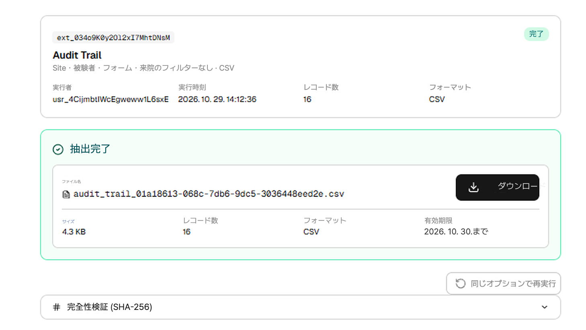
「ダウンロード」 — ファイルをダウンロードします 4.3。
抽出番号 — お問い合わせの際には、この値も一緒にお知らせください。
種類が「Audit Trail」であることを確認します。そのすぐ下の行が、その抽出の範囲です — キャプチャでは「Site·被験者·フォーム·来院 フィルターなし · CSV」です。
レコード数 — ファイルに含まれる履歴の件数です。下の完了カードにも同じ値が表示されるため、2つの値が同じかどうかを確認すれば十分です。
有効期限 — キャプチャでは、実行の翌日までです。過ぎるとダウンロードリンクは開けません。
「同じオプションで再実行」 — Audit Trail の抽出では使用できません（下の注意事項を参照）。
「完全性検証（SHA-256）」 — 開くと、ファイルの検証値が表示されます。ダウンロードしたファイルが途中で変わっていないかを照合するときに使います。
ステータス — 「完了」になってからダウンロードできます。それ以前は進行中のステータスが表示されます。
注意事項
必須確認 データ破損 · フォーム完了不可
- • 「同じオプションで再実行」は、Audit Trail の抽出では常に使用できません。ボタンには「この抽出はサブ種類の情報がないため再実行できません。エクスポートハブから新たにリクエストしてください。」という案内が付きます（抽出を管理する権限がない場合も、同様に無効になります）。有効期限が過ぎた場合や、ファイルを受け直す必要がある場合は、Audit Trail 画面に戻って「CSV/Excel エクスポート」をもう一度実行してください 4.1。
4.3ダウンロードしたファイル
概要
ダウンロードしたファイルは、履歴1件が1行になった表です。画面の一覧で見ていた日時 · カテゴリ · 対象 · 実行者 · 要約 · 変更前/後 · 理由がすべて列として入っており、先頭には詳細ウィンドウで見た参照番号が付きます。個人情報はダウンロードする人の権限に応じて、すでにマスキングされた状態で保存されます。
画面説明
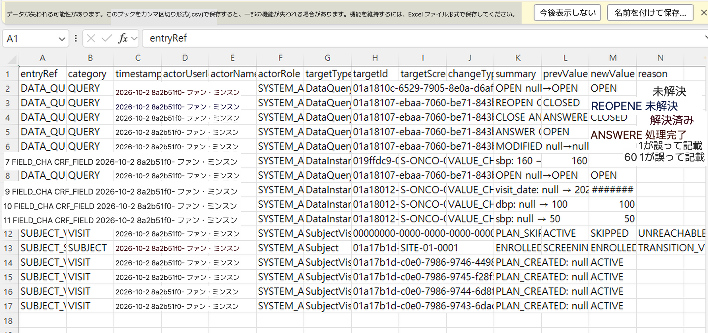
A1セルが「entryRef」 — 1行目はヘッダーです。データを扱うときに、この行を消さないでください。
実行者の氏名が韓国語のまま表示されていれば正常です。文字化けして見える場合は、ファイルをUTF-8で開いてください。
「#######」は、列が狭くて日付を全部表示できない印です — 値が誤っているわけではないので、列の境界線をダブルクリックして広げると表示されます。
データは17行目で終わります — ヘッダー1行を除いた16件で、抽出画面のレコード数 4.2と同じです。2つの値が異なる場合は、ファイルが完全ではないということです。
Excelが「このブックをカンマ区切り（.csv）形式で保存すると、一部の機能が失われる可能性があります」と通知します — ファイルが壊れているわけではありません。
列構成（キャプチャ基準 14列）
| 列 | 格納される内容 |
|---|---|
| entryRef | 履歴1件の参照番号 — 詳細ウィンドウ下部の ref と同じ値 |
| category · timestamp | カテゴリコード · 変更時刻 |
| actorUserId · actorName · actorRole | 実行者ID · 氏名 · ロール |
| targetType · targetId · targetScreeningNo | 対象の種類 · 識別子 · スクリーニング番号 |
| changeType · summary | 変更タイプ · 1行要約（一覧の要約列） |
| prevValue · newValue · reason | 変更前の値 · 変更後の値 · 理由 |
注意事項
必須確認 データ破損 · フォーム完了不可
- • ダウンロードしたファイルは原本のまま保管してください。Excelの案内に従って「名前を付けて保存」で形式を変えたり、列の幅や配置を直したうえで上書きすると、提出・監査の根拠に使う原本が失われます。修正が必要な場合はコピーを作り、コピー側で作業してください。原本は抽出画面の検証値（SHA-256）と一緒に、そのまま残します。